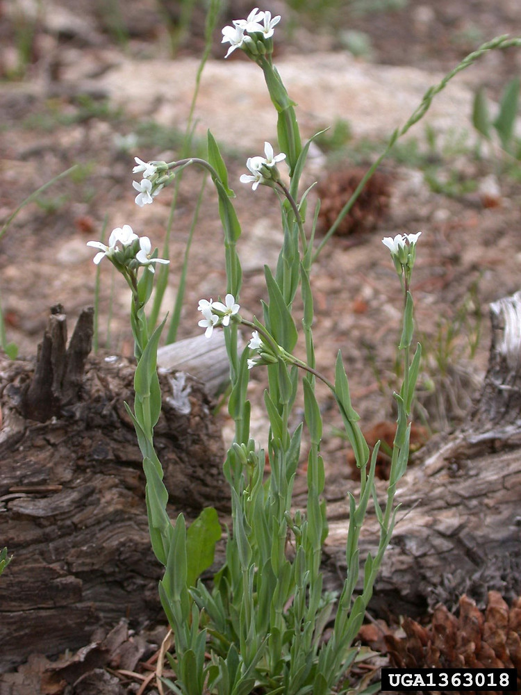

Getting data into R
ZSL Foster and NJ Grünwald
Typical format for microbiome data
Most pipelines for processing high-throughput amplicon data, such as mothur, QIIME, and dada2, result in a matrix of read counts. One dimension of this matrix (i.e. the rows or the columns) consists of OTUs, phylotypes, or unique sequences (all ways to “bin” similar read sequences). The other dimension consists of samples. Different tools will expect/output different orientations of the matrix, but, in general, columns are samples and rows are OTUs:

There is usually another table with sample information in rows:

This makes it easy to add lots of additional sample data columns that can be used to subset the data. Each sample and OTU will have an unique ID. Sometimes the OTU data and the abundance matrix are two separate tables, making the total three tables.
Importing data into R
Importing data into R can be quite easy if the data is formatted well, but can be a very frustrating experience otherwise. An example of well-formatted data is .csv (comma-separated value) or .tsv (tab-separated value) files, each with a single table and no additional comments or formatting (e.g. merged cells). Either of these formats might also have a .txt extension (the extension does not really matter; its for humans, not computers). For more information on correct data formatting, see the data formating section of our guide for reporducible research. You should always import the raw output data whenever possible and avoid any “manual” (i.e. non-scripted) modification of the data, especially in programs like Excel, which are known to mangle data from time to time (Zeeberg et al. (2004)).
Throughout this workshop, we will be using data from Wagner et al. (2016), a study on the effects of plant age, genotype, and environment on the bacterial microbiome of Boechera stricta, a perennial herb in the mustard family. Here is a photo of Boechera stricta taken by Mary Ellen Harte:

Wagner et al. (2016) released their raw data with the article and it is available here on dryad. This is a great example of how to share your raw data!
There are many functions commonly used to read tabular data, including the traditional ones like read.table and read.csv, but we will be using functions from the new readr package, which returns “tibbles” instead of data.frames (A “table” in R). Tibbles are a type of data.frame with some fancier printing and more consistent behavior. Lets read in the raw OTU table first:
library(readr) # Loads the readr package so we can use `read_tsv`
otu_data <- read_tsv("data/otuTable97.txt")
print(otu_data) # You can also enter `otu_data` to print it## # A tibble: 47,806 x 1,699
## OTU_ID M1024P1833 M1551P81 M1551P57 M1551P85 M1551P28 M1551P29 M1551P38 M1551P90 M1551P71
## <int> <dbl> <dbl> <dbl> <dbl> <dbl> <dbl> <dbl> <dbl> <dbl>
## 1 1 0 0 0 0 0 0 0 0 0
## 2 2 41 22 4 726 112492 2 413 2 1
## 3 3 67 65 12 13514 1 4 13314 70 5929
## 4 4 3229 13679 1832 951 113 2496 567 2428 2156
## 5 5 1200 92 3530 2008 0 183 2087 292 1058
## 6 6 219 1980 1200 499 1 781 214 2273 171
## 7 7 485 5123 755 4080 443 1278 2193 401 5320
## 8 8 840 7079 3760 22 0 2699 22 2870 32
## 9 9 40 82 91 881 1 449 1121 90 2283
## 10 10 11 79 277 2879 1 0 6811 14 243
## # ... with 47,796 more rows, and 1,689 more variables: M1551P12 <dbl>, M1551P84 <dbl>,
## # M1551P48 <dbl>, M1551P4 <dbl>, M1551P52 <dbl>, M1551P3 <dbl>, M1551P15 <dbl>, M1551P31 <dbl>,
## # M1551P75 <dbl>, M1551P88 <dbl>, M1551P47 <dbl>, M1551P77 <dbl>, M1551P86 <dbl>, M1551P50 <dbl>,
## # M1551P37 <dbl>, M1551P34 <dbl>, M1551P64 <dbl>, M1551P91 <dbl>, M1551P41 <dbl>, M1551P78 <dbl>,
## # M1551P46 <dbl>, M1551P40 <dbl>, M1551P74 <dbl>, M1551P72 <dbl>, M1551P14 <dbl>, M1551P89 <dbl>,
## # M1551P67 <dbl>, M1551P1 <dbl>, M1551P10 <dbl>, M1551P18 <dbl>, M1551P76 <dbl>, M1551P44 <dbl>,
## # M1551P73 <dbl>, M1551P82 <dbl>, M1551P92 <dbl>, M1551P21 <dbl>, M1551P24 <dbl>, M1551P87 <dbl>,
## # M1551P6 <dbl>, M1551P43 <dbl>, M1551P9 <dbl>, M1551P66 <dbl>, M1551P68 <dbl>, M1551P8 <dbl>,
## # M1551P30 <dbl>, M1551P2 <dbl>, M1551P33 <dbl>, M1551P83 <dbl>, M1551P80 <dbl>, M1551P39 <dbl>,
## # M1551P59 <dbl>, M1551P11 <dbl>, M1551P63 <dbl>, M1551P56 <dbl>, M1551P42 <dbl>, M1551P62 <dbl>,
## # M1554P149 <dbl>, M1554P177 <dbl>, M1554P130 <dbl>, M1554P182 <dbl>, M1554P102 <dbl>,
## # M1554P103 <dbl>, M1554P107 <dbl>, M1554P108 <dbl>, M1554P109 <dbl>, M1554P110 <dbl>,
## # M1554P111 <dbl>, M1554P117 <dbl>, M1554P118 <dbl>, M1554P119 <dbl>, M1554P120 <dbl>,
## # M1554P126 <dbl>, M1554P127 <dbl>, M1554P129 <dbl>, M1554P133 <dbl>, M1554P140 <dbl>,
## # M1554P144 <dbl>, M1554P146 <dbl>, M1554P147 <dbl>, M1554P152 <dbl>, M1554P156 <dbl>,
## # M1554P157 <dbl>, M1554P158 <dbl>, M1554P159 <dbl>, M1554P166 <dbl>, M1554P168 <dbl>,
## # M1554P171 <dbl>, M1554P174 <dbl>, M1554P176 <dbl>, M1554P181 <dbl>, M1554P183 <dbl>,
## # M1554P184 <dbl>, M1554P123 <dbl>, M1554P167 <dbl>, M1554P169 <dbl>, M1554P153 <dbl>,
## # M1554P138 <dbl>, M1554P132 <dbl>, M1554P136 <dbl>, M1554P162 <dbl>, …
This is a big data set, with 47806 rows (OTUs) and 1699 columns (1698 samples and an OTU ID). If your computer cannot load this file, don’t worry, we will provide a subset later for the rest of the workshop.
In this data set, the taxonomic classifications for the OTUs are in a different file. This information could have been included as additional columns in the OTU table and often is in other data sets.
tax_data <- read_tsv("data/taxAssignments97.txt")
print(tax_data) # You can also enter `tax_data` to print it## # A tibble: 47,806 x 8
## `OTU ID` taxonomy Kingdom Phylum Class Order Family Confidence
## <chr> <chr> <chr> <chr> <chr> <chr> <chr> <dbl>
## 1 OTU_1 Unassigned Unassig… Unassi… Unassig… Unassig… Unassign… 1
## 2 OTU_10 Root;k__Bacteria;p__Bacteroid… Bacteria Bacter… Sphingo… Sphingo… Sphingob… 1
## 3 OTU_100 Root;k__Bacteria;p__Cyanobact… Bacteria Cyanob… Chlorop… Chlorop… NA 1
## 4 OTU_1000 Root;k__Bacteria;p__Actinobac… Bacteria Actino… Actinob… Actinom… Actinosy… 0.67
## 5 OTU_10000 Unassigned Unassig… Unassi… Unassig… Unassig… Unassign… 1
## 6 OTU_10001 Root;k__Bacteria;p__Chlamydia… Bacteria Chlamy… Chlamyd… Chlamyd… Parachla… 1
## 7 OTU_10002 Root;k__Bacteria;p__Proteobac… Bacteria Proteo… Alphapr… NA NA 1
## 8 OTU_10003 Unassigned Unassig… Unassi… Unassig… Unassig… Unassign… 1
## 9 OTU_10004 Unassigned Unassig… Unassi… Unassig… Unassig… Unassign… 1
## 10 OTU_10005 Root;k__Bacteria;p__Cyanobact… Bacteria Cyanob… 4C0d-2 MLE1-12 NA 1
## # ... with 47,796 more rows
Although these data are very well-formatted compared to most, it is not perfect. The “OTU ID” column contains a space in the name (hence the back ticks), which makes it a bit more annoying to work with in R. More importantly, the OTU IDs in the taxonomy table are prefixed with “OTU_” and those in the OTU table are not, so we have to remove that prefix to make the two match up:
tax_data$`OTU ID` <- sub(tax_data$`OTU ID`, # ` are needed because of the space
pattern = "OTU_", replacement = "")
print(tax_data) ## # A tibble: 47,806 x 8
## `OTU ID` taxonomy Kingdom Phylum Class Order Family Confidence
## <chr> <chr> <chr> <chr> <chr> <chr> <chr> <dbl>
## 1 1 Unassigned Unassig… Unassig… Unassig… Unassig… Unassign… 1
## 2 10 Root;k__Bacteria;p__Bacteroid… Bacteria Bactero… Sphingo… Sphingo… Sphingob… 1
## 3 100 Root;k__Bacteria;p__Cyanobact… Bacteria Cyanoba… Chlorop… Chlorop… NA 1
## 4 1000 Root;k__Bacteria;p__Actinobac… Bacteria Actinob… Actinob… Actinom… Actinosy… 0.67
## 5 10000 Unassigned Unassig… Unassig… Unassig… Unassig… Unassign… 1
## 6 10001 Root;k__Bacteria;p__Chlamydia… Bacteria Chlamyd… Chlamyd… Chlamyd… Parachla… 1
## 7 10002 Root;k__Bacteria;p__Proteobac… Bacteria Proteob… Alphapr… NA NA 1
## 8 10003 Unassigned Unassig… Unassig… Unassig… Unassig… Unassign… 1
## 9 10004 Unassigned Unassig… Unassig… Unassig… Unassig… Unassign… 1
## 10 10005 Root;k__Bacteria;p__Cyanobact… Bacteria Cyanoba… 4C0d-2 MLE1-12 NA 1
## # ... with 47,796 more rows
Although we could proceed with the analysis using separate OTU and taxonomy tables, lets combine them to simplify things. Since the rows are in different order, we need to combine (aka “join”) them based on their OTU ID. We will use the dplyr package for this.
library(dplyr) # Loads the dplyr package so we can use `left_join`
tax_data$`OTU ID` <- as.character(tax_data$`OTU ID`) # Must be same type for join to work
otu_data$OTU_ID <- as.character(otu_data$OTU_ID) # Must be same type for join to work
otu_data <- left_join(otu_data, tax_data,
by = c("OTU_ID" = "OTU ID")) # identifies cols with shared IDs
print(otu_data)## # A tibble: 47,806 x 1,706
## OTU_ID M1024P1833 M1551P81 M1551P57 M1551P85 M1551P28 M1551P29 M1551P38 M1551P90 M1551P71
## <chr> <dbl> <dbl> <dbl> <dbl> <dbl> <dbl> <dbl> <dbl> <dbl>
## 1 1 0 0 0 0 0 0 0 0 0
## 2 2 41 22 4 726 112492 2 413 2 1
## 3 3 67 65 12 13514 1 4 13314 70 5929
## 4 4 3229 13679 1832 951 113 2496 567 2428 2156
## 5 5 1200 92 3530 2008 0 183 2087 292 1058
## 6 6 219 1980 1200 499 1 781 214 2273 171
## 7 7 485 5123 755 4080 443 1278 2193 401 5320
## 8 8 840 7079 3760 22 0 2699 22 2870 32
## 9 9 40 82 91 881 1 449 1121 90 2283
## 10 10 11 79 277 2879 1 0 6811 14 243
## # ... with 47,796 more rows, and 1,696 more variables: M1551P12 <dbl>, M1551P84 <dbl>,
## # M1551P48 <dbl>, M1551P4 <dbl>, M1551P52 <dbl>, M1551P3 <dbl>, M1551P15 <dbl>, M1551P31 <dbl>,
## # M1551P75 <dbl>, M1551P88 <dbl>, M1551P47 <dbl>, M1551P77 <dbl>, M1551P86 <dbl>, M1551P50 <dbl>,
## # M1551P37 <dbl>, M1551P34 <dbl>, M1551P64 <dbl>, M1551P91 <dbl>, M1551P41 <dbl>, M1551P78 <dbl>,
## # M1551P46 <dbl>, M1551P40 <dbl>, M1551P74 <dbl>, M1551P72 <dbl>, M1551P14 <dbl>, M1551P89 <dbl>,
## # M1551P67 <dbl>, M1551P1 <dbl>, M1551P10 <dbl>, M1551P18 <dbl>, M1551P76 <dbl>, M1551P44 <dbl>,
## # M1551P73 <dbl>, M1551P82 <dbl>, M1551P92 <dbl>, M1551P21 <dbl>, M1551P24 <dbl>, M1551P87 <dbl>,
## # M1551P6 <dbl>, M1551P43 <dbl>, M1551P9 <dbl>, M1551P66 <dbl>, M1551P68 <dbl>, M1551P8 <dbl>,
## # M1551P30 <dbl>, M1551P2 <dbl>, M1551P33 <dbl>, M1551P83 <dbl>, M1551P80 <dbl>, M1551P39 <dbl>,
## # M1551P59 <dbl>, M1551P11 <dbl>, M1551P63 <dbl>, M1551P56 <dbl>, M1551P42 <dbl>, M1551P62 <dbl>,
## # M1554P149 <dbl>, M1554P177 <dbl>, M1554P130 <dbl>, M1554P182 <dbl>, M1554P102 <dbl>,
## # M1554P103 <dbl>, M1554P107 <dbl>, M1554P108 <dbl>, M1554P109 <dbl>, M1554P110 <dbl>,
## # M1554P111 <dbl>, M1554P117 <dbl>, M1554P118 <dbl>, M1554P119 <dbl>, M1554P120 <dbl>,
## # M1554P126 <dbl>, M1554P127 <dbl>, M1554P129 <dbl>, M1554P133 <dbl>, M1554P140 <dbl>,
## # M1554P144 <dbl>, M1554P146 <dbl>, M1554P147 <dbl>, M1554P152 <dbl>, M1554P156 <dbl>,
## # M1554P157 <dbl>, M1554P158 <dbl>, M1554P159 <dbl>, M1554P166 <dbl>, M1554P168 <dbl>,
## # M1554P171 <dbl>, M1554P174 <dbl>, M1554P176 <dbl>, M1554P181 <dbl>, M1554P183 <dbl>,
## # M1554P184 <dbl>, M1554P123 <dbl>, M1554P167 <dbl>, M1554P169 <dbl>, M1554P153 <dbl>,
## # M1554P138 <dbl>, M1554P132 <dbl>, M1554P136 <dbl>, M1554P162 <dbl>, …
There are so many columns that all of them are not shown in the print out, but we can verify that they are there by looking at the last 10 column names:
tail(colnames(otu_data), n = 10)## [1] "M1958P1043" "M1691P1526" "M1691P1557" "taxonomy" "Kingdom" "Phylum" "Class"
## [8] "Order" "Family" "Confidence"
Next, lets load the sample data:
sample_data <- read_tsv("data/SMD.txt",
col_types = "cccccccccccccccc") # each "c" means a column of "character"
print(sample_data) # You can also enter `sample_data` to print it## # A tibble: 1,698 x 16
## SampleID Name Plant_ID Type Experiment Cohort Harvested Age Site Treatment Line Genotype
## <chr> <chr> <chr> <chr> <chr> <chr> <chr> <chr> <chr> <chr> <chr> <chr>
## 1 M1024P17… R_026… R_026 root fieldBCMA 2008 2011 3 LTM field 26 ril
## 2 M1024P17… R_073… R_073 root fieldBCMA 2008 2011 3 LTM field 73 ril
## 3 M1024P17… R_088… R_088 root fieldBCMA 2009 2011 2 LTM field 88 ril
## 4 M1024P18… R_156… R_156 root fieldBCMA 2009 2011 2 LTM field 156 ril
## 5 M1955P804 1_A_1… 1_A_1 root ecoGH NA 2011 NA Duke MAHsoil par1… PAR
## 6 M1956P837 1_A_1… 1_A_12 root ecoGH NA 2011 NA Duke MAHsoil mah3… MAH
## 7 M1957P983 1_A_3… 1_A_3 root ecoGH NA 2011 NA Duke MAHsoil silL… SIL
## 8 M1956P845 1_A_4… 1_A_4 root ecoGH NA 2011 NA Duke MAHsoil par1… PAR
## 9 M1957P987 1_A_7… 1_A_7 root ecoGH NA 2011 NA Duke MAHsoil par9… PAR
## 10 M1957P923 1_A_8… 1_A_8 root ecoGH NA 2011 NA Duke MAHsoil mil5… MIL
## # ... with 1,688 more rows, and 4 more variables: Block <chr>, oldPlate <chr>, newPlate <chr>,
## # Analysis <chr>
Note how the number of sample columns in otu_data is equal to the number of rows in sample_data and the columns names of otu_data appear in the “SampleID” column.
Converting to the taxmap format
Although our data is now in R, it is not in a format that is specialized for community abundance data; all R knows is that you have a few big tables. Different R packages for community (e.g. microbiome) analysis expect data in different formats or classes. A class, in programming jargon, is a defined way to store data plus some functions designed to interact with that data. When you format a specific data set in this way, we call it an object or an instance of the class. Many packages implement their own classes and functions to convert data to their format, whereas some packages use the classes defined in other packages. There are a few options for how to store an abundance matrix classified by a taxonomy in R (e.g. phyloseq objects), but we will be using classes defined in the taxa package here. The goal of the taxa package is to provide an all-purpose standard way of manipulation any type of information assigned to a taxonomy. Taxa provides a set of flexible parsers that should be able to read nearly any format, given the correct settings.
Add link to taxa parsing guide once it is online
The taxonomic data we appended to the abundance matrix has the following form:
head(otu_data$taxonomy, 10)## [1] "Unassigned"
## [2] "Root;k__Bacteria;p__Proteobacteria;c__Alphaproteobacteria;o__Rickettsiales;f__mitochondria"
## [3] "Root;k__Bacteria;p__Proteobacteria;c__Alphaproteobacteria;o__Sphingomonadales;f__Sphingomonadaceae"
## [4] "Root;k__Bacteria;p__Proteobacteria;c__Alphaproteobacteria;o__Rickettsiales;f__mitochondria"
## [5] "Root;k__Bacteria;p__Proteobacteria;c__Alphaproteobacteria;o__Rhizobiales;f__Rhizobiaceae"
## [6] "Root;k__Bacteria;p__Actinobacteria;c__Actinobacteria;o__Actinomycetales;f__Kineosporiaceae"
## [7] "Root;k__Bacteria;p__Cyanobacteria;c__Chloroplast;o__Streptophyta;f__"
## [8] "Root;k__Bacteria;p__Proteobacteria;c__Alphaproteobacteria;o__Rhizobiales;f__Bradyrhizobiaceae"
## [9] "Root;k__Bacteria;p__Proteobacteria;c__Gammaproteobacteria;o__Pseudomonadales;f__Pseudomonadaceae"
## [10] "Root;k__Bacteria;p__Bacteroidetes;c__Sphingobacteriia;o__Sphingobacteriales;f__Sphingobacteriaceae"
Note that there are some odd aspects to the format that could make it challenging to parse:
- Some taxa have ranks (e.g. “k__Bacteria“) and some don’t (e.g.”Unassigned" and “Root”).
- Some taxa have ranks, but no names (e.g. “f__“).
If we just consider the ranks to be a part of the taxon name, then its pretty easy to parse:
library(taxa)
obj <- parse_tax_data(otu_data,
class_cols = "taxonomy", # The column in the input table
class_sep = ";") # What each taxon is seperated by
print(obj)## <Taxmap>
## 1558 taxa: aab. Unassigned, aac. Root ... chx. f__Methanospirillaceae, chy. f__
## 1558 edges: NA->aab, NA->aac, aac->aad, aac->aae ... bel->chw, ays->chx, bem->chy
## 1 data sets:
## tax_data:
## # A tibble: 47,806 x 1,707
## taxon_id OTU_ID M1024P1833 M1551P81 M1551P57 M1551P85 M1551P28 M1551P29 M1551P38
## <chr> <chr> <dbl> <dbl> <dbl> <dbl> <dbl> <dbl> <dbl>
## 1 aab 1 0 0 0 0 0 0 0
## 2 ben 2 41 22 4 726 112492 2 413
## 3 beo 3 67 65 12 13514 1 4 13314
## # ... with 4.78e+04 more rows, and 1,698 more variables: M1551P90 <dbl>,
## # M1551P71 <dbl>, M1551P12 <dbl>, M1551P84 <dbl>, M1551P48 <dbl>, M1551P4 <dbl>,
## # M1551P52 <dbl>, M1551P3 <dbl>, M1551P15 <dbl>, M1551P31 <dbl>, M1551P75 <dbl>,
## # M1551P88 <dbl>, M1551P47 <dbl>, M1551P77 <dbl>, M1551P86 <dbl>, M1551P50 <dbl>,
## # M1551P37 <dbl>, M1551P34 <dbl>, M1551P64 <dbl>, M1551P91 <dbl>, M1551P41 <dbl>,
## # M1551P78 <dbl>, M1551P46 <dbl>, M1551P40 <dbl>, M1551P74 <dbl>, M1551P72 <dbl>,
## # M1551P14 <dbl>, M1551P89 <dbl>, M1551P67 <dbl>, M1551P1 <dbl>, M1551P10 <dbl>,
## # M1551P18 <dbl>, M1551P76 <dbl>, M1551P44 <dbl>, M1551P73 <dbl>, M1551P82 <dbl>,
## # M1551P92 <dbl>, M1551P21 <dbl>, M1551P24 <dbl>, M1551P87 <dbl>, M1551P6 <dbl>,
## # M1551P43 <dbl>, M1551P9 <dbl>, M1551P66 <dbl>, M1551P68 <dbl>, M1551P8 <dbl>,
## # M1551P30 <dbl>, M1551P2 <dbl>, M1551P33 <dbl>, M1551P83 <dbl>, M1551P80 <dbl>,
## # M1551P39 <dbl>, M1551P59 <dbl>, M1551P11 <dbl>, M1551P63 <dbl>, M1551P56 <dbl>,
## # M1551P42 <dbl>, M1551P62 <dbl>, M1554P149 <dbl>, M1554P177 <dbl>,
## # M1554P130 <dbl>, M1554P182 <dbl>, M1554P102 <dbl>, M1554P103 <dbl>,
## # M1554P107 <dbl>, M1554P108 <dbl>, M1554P109 <dbl>, M1554P110 <dbl>,
## # M1554P111 <dbl>, M1554P117 <dbl>, M1554P118 <dbl>, M1554P119 <dbl>,
## # M1554P120 <dbl>, M1554P126 <dbl>, M1554P127 <dbl>, M1554P129 <dbl>,
## # M1554P133 <dbl>, M1554P140 <dbl>, M1554P144 <dbl>, M1554P146 <dbl>,
## # M1554P147 <dbl>, M1554P152 <dbl>, M1554P156 <dbl>, M1554P157 <dbl>,
## # M1554P158 <dbl>, M1554P159 <dbl>, M1554P166 <dbl>, M1554P168 <dbl>,
## # M1554P171 <dbl>, M1554P174 <dbl>, M1554P176 <dbl>, M1554P181 <dbl>,
## # M1554P183 <dbl>, M1554P184 <dbl>, M1554P123 <dbl>, M1554P167 <dbl>,
## # M1554P169 <dbl>, M1554P153 <dbl>, M1554P138 <dbl>, M1554P132 <dbl>, …
## 0 functions:
Above is the print out of a taxmap object. The first line tells us that the OTUs are assigned to 1558 unique taxa and lists their IDs and names. These taxon IDs were generated automatically when converting to the taxmap format and were not in the original data set. The second line describes how taxa relate to each other in the tree. Note how our original data are now inside this object:
print(obj$data$tax_data)## # A tibble: 47,806 x 1,707
## taxon_id OTU_ID M1024P1833 M1551P81 M1551P57 M1551P85 M1551P28 M1551P29 M1551P38 M1551P90
## <chr> <chr> <dbl> <dbl> <dbl> <dbl> <dbl> <dbl> <dbl> <dbl>
## 1 aab 1 0 0 0 0 0 0 0 0
## 2 ben 2 41 22 4 726 112492 2 413 2
## 3 beo 3 67 65 12 13514 1 4 13314 70
## 4 ben 4 3229 13679 1832 951 113 2496 567 2428
## 5 bep 5 1200 92 3530 2008 0 183 2087 292
## 6 beq 6 219 1980 1200 499 1 781 214 2273
## 7 ber 7 485 5123 755 4080 443 1278 2193 401
## 8 bes 8 840 7079 3760 22 0 2699 22 2870
## 9 bet 9 40 82 91 881 1 449 1121 90
## 10 beu 10 11 79 277 2879 1 0 6811 14
## # ... with 47,796 more rows, and 1,697 more variables: M1551P71 <dbl>, M1551P12 <dbl>,
## # M1551P84 <dbl>, M1551P48 <dbl>, M1551P4 <dbl>, M1551P52 <dbl>, M1551P3 <dbl>, M1551P15 <dbl>,
## # M1551P31 <dbl>, M1551P75 <dbl>, M1551P88 <dbl>, M1551P47 <dbl>, M1551P77 <dbl>, M1551P86 <dbl>,
## # M1551P50 <dbl>, M1551P37 <dbl>, M1551P34 <dbl>, M1551P64 <dbl>, M1551P91 <dbl>, M1551P41 <dbl>,
## # M1551P78 <dbl>, M1551P46 <dbl>, M1551P40 <dbl>, M1551P74 <dbl>, M1551P72 <dbl>, M1551P14 <dbl>,
## # M1551P89 <dbl>, M1551P67 <dbl>, M1551P1 <dbl>, M1551P10 <dbl>, M1551P18 <dbl>, M1551P76 <dbl>,
## # M1551P44 <dbl>, M1551P73 <dbl>, M1551P82 <dbl>, M1551P92 <dbl>, M1551P21 <dbl>, M1551P24 <dbl>,
## # M1551P87 <dbl>, M1551P6 <dbl>, M1551P43 <dbl>, M1551P9 <dbl>, M1551P66 <dbl>, M1551P68 <dbl>,
## # M1551P8 <dbl>, M1551P30 <dbl>, M1551P2 <dbl>, M1551P33 <dbl>, M1551P83 <dbl>, M1551P80 <dbl>,
## # M1551P39 <dbl>, M1551P59 <dbl>, M1551P11 <dbl>, M1551P63 <dbl>, M1551P56 <dbl>, M1551P42 <dbl>,
## # M1551P62 <dbl>, M1554P149 <dbl>, M1554P177 <dbl>, M1554P130 <dbl>, M1554P182 <dbl>,
## # M1554P102 <dbl>, M1554P103 <dbl>, M1554P107 <dbl>, M1554P108 <dbl>, M1554P109 <dbl>,
## # M1554P110 <dbl>, M1554P111 <dbl>, M1554P117 <dbl>, M1554P118 <dbl>, M1554P119 <dbl>,
## # M1554P120 <dbl>, M1554P126 <dbl>, M1554P127 <dbl>, M1554P129 <dbl>, M1554P133 <dbl>,
## # M1554P140 <dbl>, M1554P144 <dbl>, M1554P146 <dbl>, M1554P147 <dbl>, M1554P152 <dbl>,
## # M1554P156 <dbl>, M1554P157 <dbl>, M1554P158 <dbl>, M1554P159 <dbl>, M1554P166 <dbl>,
## # M1554P168 <dbl>, M1554P171 <dbl>, M1554P174 <dbl>, M1554P176 <dbl>, M1554P181 <dbl>,
## # M1554P183 <dbl>, M1554P184 <dbl>, M1554P123 <dbl>, M1554P167 <dbl>, M1554P169 <dbl>,
## # M1554P153 <dbl>, M1554P138 <dbl>, M1554P132 <dbl>, M1554P136 <dbl>, …
obj$data is a list of arbitrary, user-defined data sets. These data sets can be named anything and can be any R object, such as lists, vectors, or tables. This is different than phyloseq objects, which have a fixed number of data sets in pre-defined formats. Note that our data set now has a “taxon_id” column, which maps rows in the table to a taxa in the taxonomy. This column is essential for the manipulation functions of taxa to know how to handle these data sets, as we will demonstrate later.
If we want to split out the rank information, we can use regular expressions (a.k.a “regex”) to specify which part of each taxon is a rank and which part is a name. If you are not familiar with using regular expressions, this might be challenging to understand at first, but it is a very useful skill to have, so it is worth learning. Most regular expressions are composed of a series of “what to match” followed by “how many times to match”. One regular expression that matches the pattern of taxon names is ^[a-z]{0,1}_{0,2}.*$. This might look intimidating, but we can break it down into understandable parts:
- The
^and$represent the start and end of the text respectively. If these were not there, then the pattern could match just a part of the text - The square brackets (e.g.
[a-z]) specify a range of characters that can be matched. Likewise the.means match any character. - The contents of the curly braces (e.g.
{0,1}) indicate the number of time the preceding pattern can match. Likewise, the*means 0 or more matches. For example the part of the regex^[a-z]{0,1}means “match a characterathroughzthat occurs at the start of the string either zero or one times”.
The whole regex means the following in common English:
“From the start of the string, (^) match any character between”a" and “z” ([a-z]) zero or one times ({0,1}) followed by an underscore (_) occurring between zero and 2 times ({0,2}), followed by any character (.) occurring zero or more times (*), followed by the end of the text ($)."
We can add parentheses that specify which parts of the pattern go together; these are called capture groups in regex jargon. These do not change what will be matched; they just define different parts of the pattern. In this case, we are interested in the taxon rank (matched by ([a-z]{0,1})) and the taxon name (matched by (.*)).
The parse_tax_data function from the taxa package uses regular expressions with capture groups to isolate the pieces of information we want. For each capture group in the regular expression (aka “regex”), a value is given to the class_key option specifying what the group is (e.g. taxon name). Putting this all together, we can read the data like so:
obj <- parse_tax_data(otu_data,
class_cols = "taxonomy",
class_sep = ";",
class_regex = "^([a-z]{0,1})_{0,2}(.*)$",
class_key = c("tax_rank" = "taxon_rank", "name" = "taxon_name"))
print(obj)## <Taxmap>
## 1558 taxa: aab. Unassigned, aac. Root ... chx. Methanospirillaceae, chy.
## 1558 edges: NA->aab, NA->aac, aac->aad, aac->aae ... bel->chw, ays->chx, bem->chy
## 2 data sets:
## tax_data:
## # A tibble: 47,806 x 1,707
## taxon_id OTU_ID M1024P1833 M1551P81 M1551P57 M1551P85 M1551P28 M1551P29 M1551P38
## <chr> <chr> <dbl> <dbl> <dbl> <dbl> <dbl> <dbl> <dbl>
## 1 aab 1 0 0 0 0 0 0 0
## 2 ben 2 41 22 4 726 112492 2 413
## 3 beo 3 67 65 12 13514 1 4 13314
## # ... with 4.78e+04 more rows, and 1,698 more variables: M1551P90 <dbl>,
## # M1551P71 <dbl>, M1551P12 <dbl>, M1551P84 <dbl>, M1551P48 <dbl>, M1551P4 <dbl>,
## # M1551P52 <dbl>, M1551P3 <dbl>, M1551P15 <dbl>, M1551P31 <dbl>, M1551P75 <dbl>,
## # M1551P88 <dbl>, M1551P47 <dbl>, M1551P77 <dbl>, M1551P86 <dbl>, M1551P50 <dbl>,
## # M1551P37 <dbl>, M1551P34 <dbl>, M1551P64 <dbl>, M1551P91 <dbl>, M1551P41 <dbl>,
## # M1551P78 <dbl>, M1551P46 <dbl>, M1551P40 <dbl>, M1551P74 <dbl>, M1551P72 <dbl>,
## # M1551P14 <dbl>, M1551P89 <dbl>, M1551P67 <dbl>, M1551P1 <dbl>, M1551P10 <dbl>,
## # M1551P18 <dbl>, M1551P76 <dbl>, M1551P44 <dbl>, M1551P73 <dbl>, M1551P82 <dbl>,
## # M1551P92 <dbl>, M1551P21 <dbl>, M1551P24 <dbl>, M1551P87 <dbl>, M1551P6 <dbl>,
## # M1551P43 <dbl>, M1551P9 <dbl>, M1551P66 <dbl>, M1551P68 <dbl>, M1551P8 <dbl>,
## # M1551P30 <dbl>, M1551P2 <dbl>, M1551P33 <dbl>, M1551P83 <dbl>, M1551P80 <dbl>,
## # M1551P39 <dbl>, M1551P59 <dbl>, M1551P11 <dbl>, M1551P63 <dbl>, M1551P56 <dbl>,
## # M1551P42 <dbl>, M1551P62 <dbl>, M1554P149 <dbl>, M1554P177 <dbl>,
## # M1554P130 <dbl>, M1554P182 <dbl>, M1554P102 <dbl>, M1554P103 <dbl>,
## # M1554P107 <dbl>, M1554P108 <dbl>, M1554P109 <dbl>, M1554P110 <dbl>,
## # M1554P111 <dbl>, M1554P117 <dbl>, M1554P118 <dbl>, M1554P119 <dbl>,
## # M1554P120 <dbl>, M1554P126 <dbl>, M1554P127 <dbl>, M1554P129 <dbl>,
## # M1554P133 <dbl>, M1554P140 <dbl>, M1554P144 <dbl>, M1554P146 <dbl>,
## # M1554P147 <dbl>, M1554P152 <dbl>, M1554P156 <dbl>, M1554P157 <dbl>,
## # M1554P158 <dbl>, M1554P159 <dbl>, M1554P166 <dbl>, M1554P168 <dbl>,
## # M1554P171 <dbl>, M1554P174 <dbl>, M1554P176 <dbl>, M1554P181 <dbl>,
## # M1554P183 <dbl>, M1554P184 <dbl>, M1554P123 <dbl>, M1554P167 <dbl>,
## # M1554P169 <dbl>, M1554P153 <dbl>, M1554P138 <dbl>, M1554P132 <dbl>, …
## class_data:
## # A tibble: 216,417 x 5
## taxon_id input_index tax_rank name regex_match
## <chr> <int> <chr> <chr> <chr>
## 1 aab 1 "" Unassigned Unassigned
## 2 aac 2 "" Root Root
## 3 aad 2 k Bacteria k__Bacteria
## # ... with 2.164e+05 more rows
## 0 functions:
Note how the taxon names do not have the rank information anymore:
head(obj$taxon_names())## aab aac aad aae aaf
## "Unassigned" "Root" "Bacteria" "Archaea" "Proteobacteria"
## aag
## "Actinobacteria"
Instead, the rank information (and any other capture group content) is in a separate data set:
obj$data$class_data## # A tibble: 216,417 x 5
## taxon_id input_index tax_rank name regex_match
## <chr> <int> <chr> <chr> <chr>
## 1 aab 1 "" Unassigned Unassigned
## 2 aac 2 "" Root Root
## 3 aad 2 k Bacteria k__Bacteria
## 4 aaf 2 p Proteobacteria p__Proteobacteria
## 5 add 2 c Alphaproteobacteria c__Alphaproteobacteria
## 6 amg 2 o Rickettsiales o__Rickettsiales
## 7 ben 2 f mitochondria f__mitochondria
## 8 aac 3 "" Root Root
## 9 aad 3 k Bacteria k__Bacteria
## 10 aaf 3 p Proteobacteria p__Proteobacteria
## # ... with 216,407 more rows
However, ranks can also be accessed using the taxon_ranks function:
head(obj$taxon_ranks())## aab aac aad aae aaf aag
## "" "" "k" "k" "p" "p"
So we don’t really need the “class_data” table, so lets get rid of it:
obj$data <- obj$data[1] # 1 is index of the "tax_data" table we wantLets also rename the “tax_data” table to something more informative:
names(obj$data) <- "otu_counts"
print(obj)## <Taxmap>
## 1558 taxa: aab. Unassigned, aac. Root ... chx. Methanospirillaceae, chy.
## 1558 edges: NA->aab, NA->aac, aac->aad, aac->aae ... bel->chw, ays->chx, bem->chy
## 1 data sets:
## otu_counts:
## # A tibble: 47,806 x 1,707
## taxon_id OTU_ID M1024P1833 M1551P81 M1551P57 M1551P85 M1551P28 M1551P29 M1551P38
## <chr> <chr> <dbl> <dbl> <dbl> <dbl> <dbl> <dbl> <dbl>
## 1 aab 1 0 0 0 0 0 0 0
## 2 ben 2 41 22 4 726 112492 2 413
## 3 beo 3 67 65 12 13514 1 4 13314
## # ... with 4.78e+04 more rows, and 1,698 more variables: M1551P90 <dbl>,
## # M1551P71 <dbl>, M1551P12 <dbl>, M1551P84 <dbl>, M1551P48 <dbl>, M1551P4 <dbl>,
## # M1551P52 <dbl>, M1551P3 <dbl>, M1551P15 <dbl>, M1551P31 <dbl>, M1551P75 <dbl>,
## # M1551P88 <dbl>, M1551P47 <dbl>, M1551P77 <dbl>, M1551P86 <dbl>, M1551P50 <dbl>,
## # M1551P37 <dbl>, M1551P34 <dbl>, M1551P64 <dbl>, M1551P91 <dbl>, M1551P41 <dbl>,
## # M1551P78 <dbl>, M1551P46 <dbl>, M1551P40 <dbl>, M1551P74 <dbl>, M1551P72 <dbl>,
## # M1551P14 <dbl>, M1551P89 <dbl>, M1551P67 <dbl>, M1551P1 <dbl>, M1551P10 <dbl>,
## # M1551P18 <dbl>, M1551P76 <dbl>, M1551P44 <dbl>, M1551P73 <dbl>, M1551P82 <dbl>,
## # M1551P92 <dbl>, M1551P21 <dbl>, M1551P24 <dbl>, M1551P87 <dbl>, M1551P6 <dbl>,
## # M1551P43 <dbl>, M1551P9 <dbl>, M1551P66 <dbl>, M1551P68 <dbl>, M1551P8 <dbl>,
## # M1551P30 <dbl>, M1551P2 <dbl>, M1551P33 <dbl>, M1551P83 <dbl>, M1551P80 <dbl>,
## # M1551P39 <dbl>, M1551P59 <dbl>, M1551P11 <dbl>, M1551P63 <dbl>, M1551P56 <dbl>,
## # M1551P42 <dbl>, M1551P62 <dbl>, M1554P149 <dbl>, M1554P177 <dbl>,
## # M1554P130 <dbl>, M1554P182 <dbl>, M1554P102 <dbl>, M1554P103 <dbl>,
## # M1554P107 <dbl>, M1554P108 <dbl>, M1554P109 <dbl>, M1554P110 <dbl>,
## # M1554P111 <dbl>, M1554P117 <dbl>, M1554P118 <dbl>, M1554P119 <dbl>,
## # M1554P120 <dbl>, M1554P126 <dbl>, M1554P127 <dbl>, M1554P129 <dbl>,
## # M1554P133 <dbl>, M1554P140 <dbl>, M1554P144 <dbl>, M1554P146 <dbl>,
## # M1554P147 <dbl>, M1554P152 <dbl>, M1554P156 <dbl>, M1554P157 <dbl>,
## # M1554P158 <dbl>, M1554P159 <dbl>, M1554P166 <dbl>, M1554P168 <dbl>,
## # M1554P171 <dbl>, M1554P174 <dbl>, M1554P176 <dbl>, M1554P181 <dbl>,
## # M1554P183 <dbl>, M1554P184 <dbl>, M1554P123 <dbl>, M1554P167 <dbl>,
## # M1554P169 <dbl>, M1554P153 <dbl>, M1554P138 <dbl>, M1554P132 <dbl>, …
## 0 functions:
Exercises
Reading tabular data
1) Take a look at the file called “parsing_exercise_1_example.tsv”.
2) Try reading the file using the base R function read.table. You might need to change some of the options. Type ?read.table to see the documentation for this function. Hint: what does the .tsv extension mean?
3) Now try reading the same file using the read_tsv function from the readr package. Type ?read_tsv to see the documentation for this function.
4) Compare the two results. What is different about them? Try using the str function on each result to see the details about how they are formatted.
5) Try to change the input parameters of both functions so that all columns are of type character (“chr” in the str output).
Reading taxonomic data
In this exercise we will be converting the table from the previous exercise to a taxmap object.
my_data <- read_tsv("data/example_data_1.tsv")## Parsed with column specification:
## cols(
## common_name = col_character(),
## ncbi_seq_id = col_character(),
## itis_taxon_id = col_integer(),
## my_taxonomy = col_character()
## )print(my_data)## # A tibble: 3 x 4
## common_name ncbi_seq_id itis_taxon_id my_taxonomy
## <chr> <chr> <int> <chr>
## 1 Lions FJ712037 183803 mammalia, felidae, panthera, leo
## 2 Tigers KC879292 183806 mammalia, felidae, panthera, tigris
## 3 Bears HW243304 180544 mammalia, ursidae, ursus, americanus
1) Look at the documentation for parse_tax_data and lookup_tax_data. The examples at the bottom of the documentation should be helpful.
2) Try using parse_tax_data to convert the table to a taxmap object, using the my_taxonomy column for the taxonomic information. You should get a taxonomy with “mammalia” at the root. How does the table included in the output differ from the input table?
3) Try using lookup_tax_data to convert the table to a taxmap object, using the ncbi_seq_id column to look up the taxonomy associated with these Genbank accession numbers. NOTE: This requires an internet connection.
4) Try using lookup_tax_data to convert the table to a taxmap object, using the itis_taxon_id column to look up the taxonomic classifications from the Integrated Taxonomic Information System (ITIS) for these taxon IDs. NOTE: This requires an internet connection.
4) Compare the results of the three sources of taxonomic information. What is different? What is the same?
Reading taxonomic data from complex formats
Sometimes taxonomic data can be embedded in complex text, like FASTA headers. Look at the file “example_data_2.fa” which contains headers with two sources of taxonomic information:
- The Genbank accession number
- The taxonomic classification
1) Read the FASTA file called “example_data_2.fa” using the read.FASTA function from the ape package and store the result in a variable.
2) Use the names function to get the headers and stores those in another variable.
3) Look at the documentation for extract_tax_data from the taxa package.
4) Use the extract_tax_data function to convert the headers to a taxmap object, using the NCBI accession number. The classification can be ignored (i.e. not given a capture group and key value) or stored as "info".
5) Now use the classification instead of the accession numbers. The accession number can be ignored or stored as "info". Consider the rank as part of the taxon name for now.
6) Now try to split out the rank information from the taxon name. You will need to use the class_key and class_regex options. The ranks can be stored as "info" or "taxon_rank“. Using "taxon_rank” allows the ranks to be accessed with the taxon_ranks function.
7) Sometimes you will have the option to use more than one source of taxonomic information, like in this exercise. What are the benefits of using the embedded classification information instead of a Genbank accession number or taxon ID?
References
Wagner, Maggie R, Derek S Lundberg, G Tijana, Susannah G Tringe, Jeffery L Dangl, and Thomas Mitchell-Olds. 2016. “Host Genotype and Age Shape the Leaf and Root Microbiomes of a Wild Perennial Plant.” Nature Communications 7. Nature Publishing Group: 12151. doi:10.1038/ncomms12151.
Zeeberg, Barry R, Joseph Riss, David W Kane, Kimberly J Bussey, Edward Uchio, W Marston Linehan, J Carl Barrett, and John N Weinstein. 2004. “Mistaken Identifiers: Gene Name Errors Can Be Introduced Inadvertently When Using Excel in Bioinformatics.” BMC Bioinformatics 5 (1). BioMed Central: 80. https://doi.org/10.1186/1471-2105-5-80.

Analysis of Microbiome Community Data in R by The Grunwald lab and the USDA Horticultural Crops Research Unit is licensed under a Creative Commons Attribution-ShareAlike 4.0 International License.
Based on a work at https://github.com/grunwaldlab/analysis_of_microbiome_community_data_in_r.